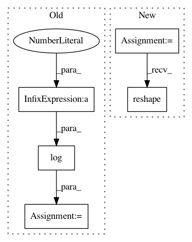

64710c051f26a2778c03fc15ef29c4bcae01df32,official/recommendation/ncf_main.py,,evaluate_model,#Any#Any#Any#,57
Before Change
// appear. That is to say: hit_ind.shape[0] <= num_users
hit_ind = np.argwhere(np.equal(top_indicies, 0))
hr = hit_ind.shape[0] / ncf_dataset.num_users
ndcg = np.sum(np.log(2) / np.log(hit_ind[:, 1] + 2)) / ncf_dataset.num_users
global_step = estimator.get_variable_value(tf.GraphKeys.GLOBAL_STEP)
eval_results = {
_HR_KEY: hr,
After Change
predictions = list(predictions)
prediction_batches = [p[movielens.RATING_COLUMN] for p in predictions]
item_batches = [p[movielens.ITEM_COLUMN] for p in predictions]
// Reshape the predicted scores and items. Each user takes one row.
prediction_with_padding = np.concatenate(prediction_batches, axis=0)
predicted_scores_by_user = prediction_with_padding[
:ncf_dataset.num_users * (1 + rconst.NUM_EVAL_NEGATIVES)]\
.reshape(ncf_dataset.num_users, -1)
item_with_padding = np.concatenate(item_batches, axis=0)
items_by_user = item_with_padding[
:ncf_dataset.num_users * (1 + rconst.NUM_EVAL_NEGATIVES)]\
.reshape(ncf_dataset.num_users, -1)
tf.logging.info("Computing metrics...")
hr, ndcg = get_hit_rate_and_ndcg(predicted_scores_by_user, items_by_user,
In pattern: SUPERPATTERN
Frequency: 3
Non-data size: 5
Instances
Project Name: tensorflow/models
Commit Name: 64710c051f26a2778c03fc15ef29c4bcae01df32
Time: 2018-08-22
Author: reedwm@google.com
File Name: official/recommendation/ncf_main.py
Class Name:
Method Name: evaluate_model
Project Name: mahyarnajibi/SNIPER
Commit Name: 72caa3677f5f9cc09ed98324c76454c38a7e8098
Time: 2018-06-04
Author: mahyarnajibi@gmail.com
File Name: lib/metric.py
Class Name: MaskLogLossMetric
Method Name: update
Project Name: yzhao062/pyod
Commit Name: 4638cbc8d106450f1e821750b4af0ea88408a6ee
Time: 2018-03-03
Author: yuezhao@cs.toronto.edu
File Name: models/hbos.py
Class Name: Hbos
Method Name: fit